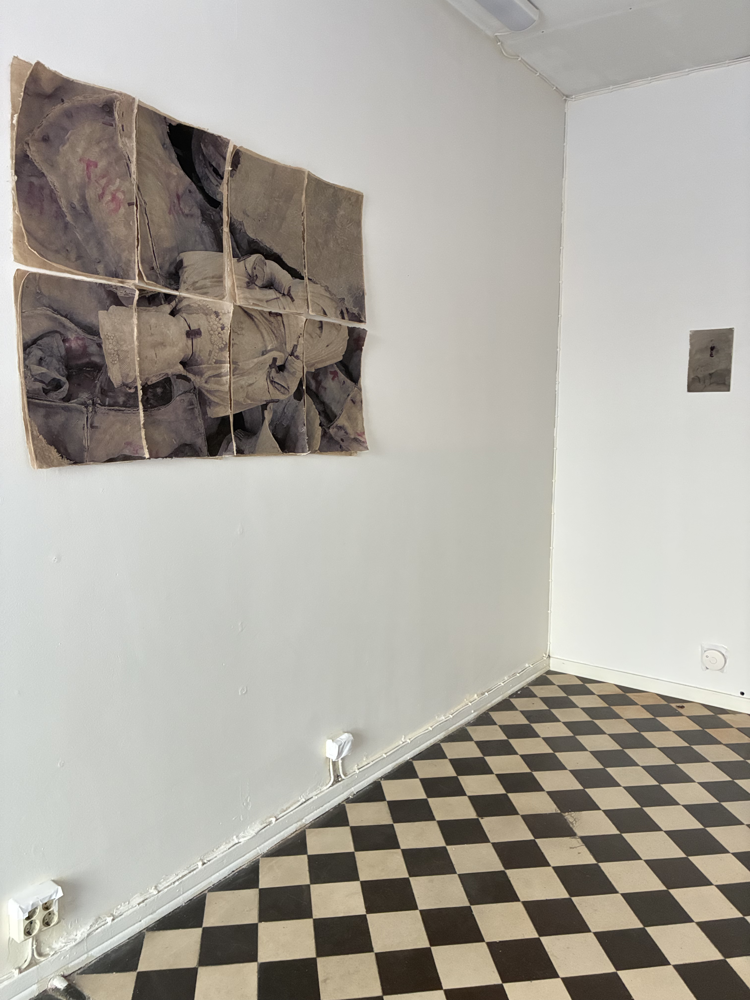
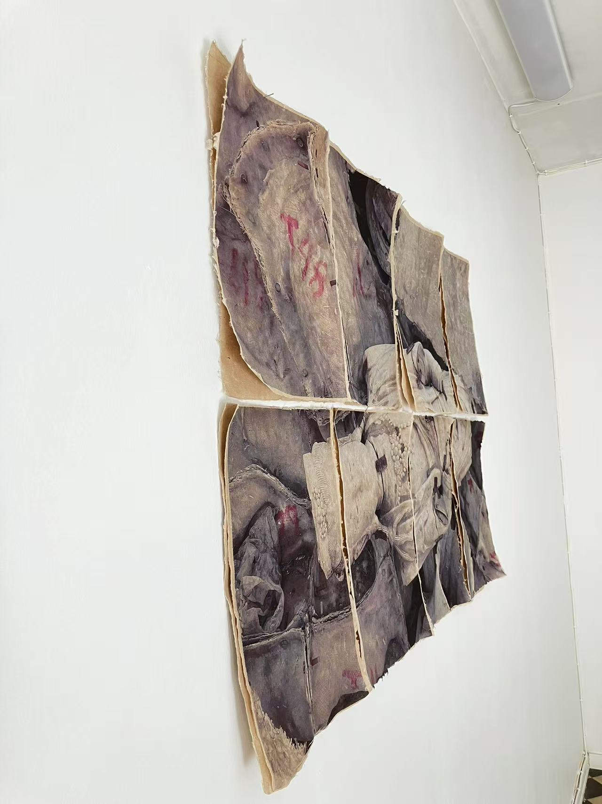
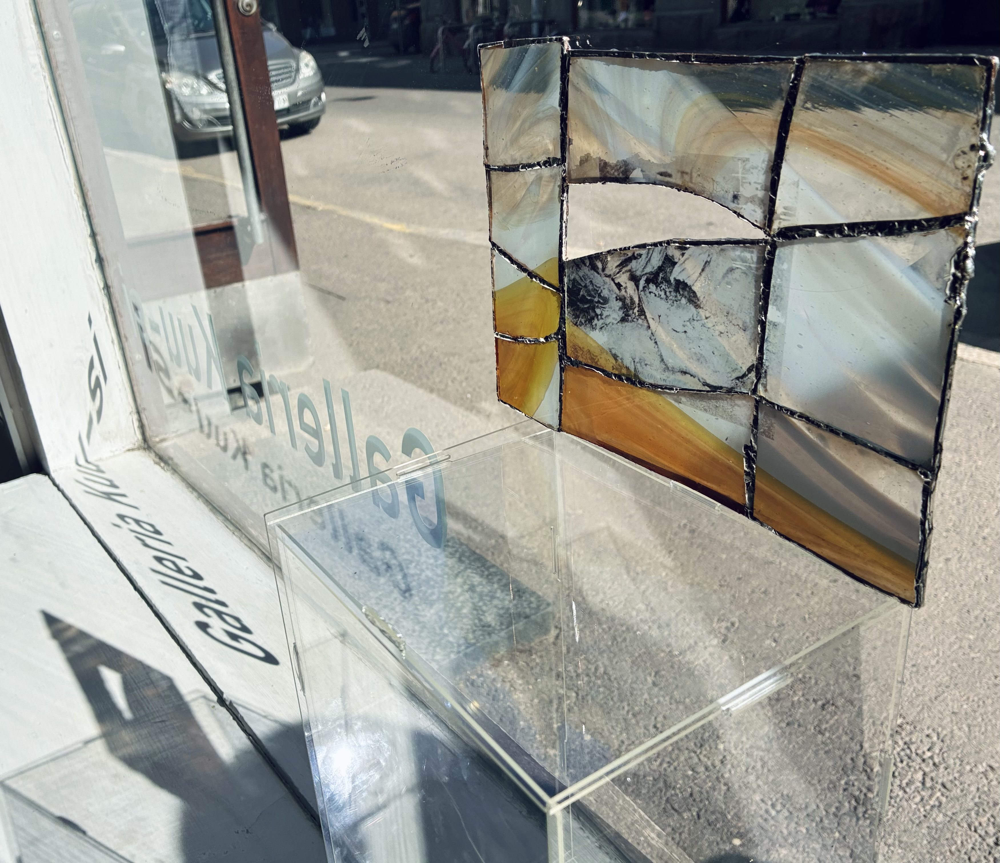

OEMK / ONGOING RESEARCH
Proxies
When no direct image survives, I work with found archival photographs as proxies for what is missing.
These works move between archival and photographic images, fallen statues, and monuments, approaching histories through their fragments, remains, and reproductions.

Manufacturing Gods
Ginko Hsu
2026
Print on handmade paper
Approx. 120 × 80 cm
Exhibited in Elephant Tale (亻象)
Galleria Kuu-si, Helsinki, 2026
Beginning with photographs of fallen Buddhas taken in an abandoned Buddhist statue factory in my hometown, Suzhou, Manufacturing Gods approaches the image through its material remains.


Remains of the Victory Angel
Ginko Hsu
2026
Print on glass, copper, tin
Exhibited in From A Far
Galleria Kuu-si, Helsinki, 2026
At the center of the work are the remains of what was known in Chinese as the “European War Victory Memorial” 欧战胜利纪念碑, or the “Angel of Peace” 和平女神像, on the Shanghai Bund.
Built in 1924, the monument commemorated foreign residents of Shanghai who died while serving in the Allied armies during the First World War. It was a monument to foreign memory, installed in Shanghai through the logic of the concessions, turning a European war into a public image on colonial land. Although many Chinese members of the Labour Corps worked for the Allied forces, their sacrifice was never visibly inscribed into the monument.
The statue was later removed in 1943 under Japanese pressure during the occupation of Shanghai, and its remains were found after the war. In this work, the ruined monument returns as a ghost image.